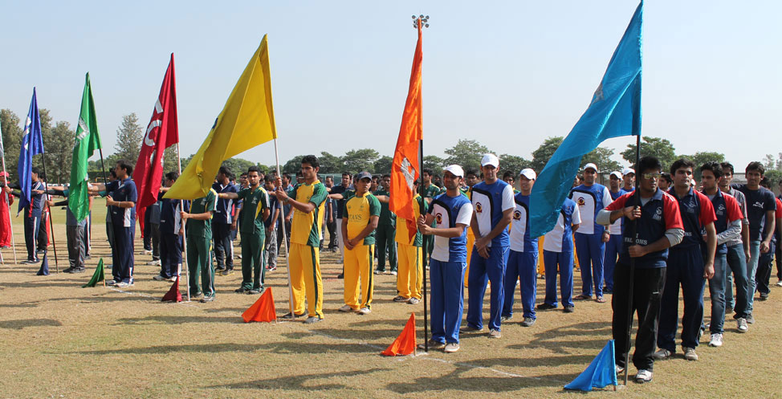
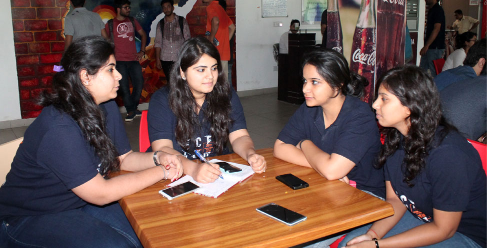
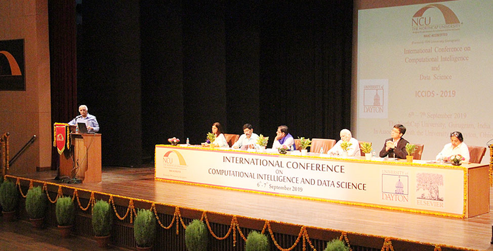
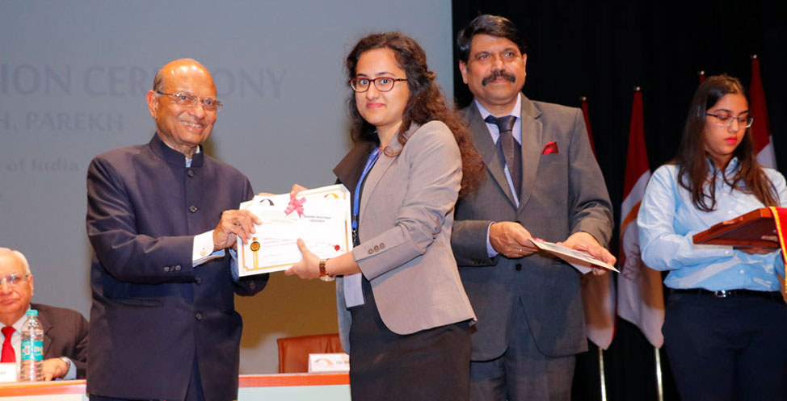
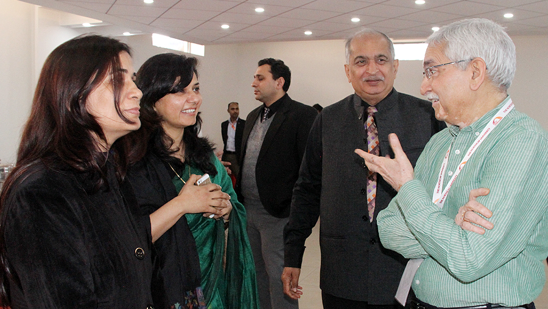

The NorthCap University |
||
|---|---|---|
Our Schools
|
LoginGallery    |
About UsThe NorthCap University (NCU), is promoted by the Educate India Society that was founded in 1996.Previously an engineering and management college(ITM), the institute gained the status of a State Private university in 2009, under Act No. 25/2009 by the Legislature of the State of Haryana and accorded UGC approval under Section 2(f) of the UGC Act 1956. NCU rebranded itself on 31 August 2015 vide Haryana Government Ordinance No. 2 of 2015, followed by a UGC notification dated 26 August 2015. NCU is a single campus university located in Sector 23-A, Gurugram,Haryana. It has been accredited by the National Assessment and Accreditation Council (NAAC) 2016-2021. In a span of a few years, we have emerged as one of the foremost educational institutions in North India. As a testimony of this fact, we have been ranked as ‘The University of the Year 2017’ by the Higher Education Review and are among the top 150 universities under the National Institutional Ranking Framework (NIRF) by the Ministry of Human Resource Development,Government of India. The University offers a variety of undergraduate and postgraduate programmes in disciplines such as engineering, management, applied sciences and law. NCU is recognized by the University Grants Commission (UGC) and by the Bar Council of India(BCI). The University is a Member of the Association of Indian Universities (AIU), Member of the Association of Commonwealth Universities (ACU), UK. In addition to being a Member of the American Society for Quality (I) Pvt Ltd, NCU is also accredited by Accreditation Services for International Colleges (ASIC), UK. |
Made by Pearl Arora, 19csu208 |
||